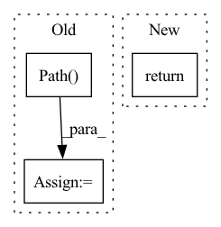

Pattern ID :7183
Before Change
// TODO(suquark): Cache built wheels to prevent rebuilding.
// This may not be necessary because it"s fast to build the wheel.
// check if sky is installed under development mode.
package_root = pathlib.Path( sky.__file__) .parent.parent
// Use a newly made, unique temporary dir because there may be many
// concurrent "sky launch" happening.
tempdir = tempfile.mkdtemp()
wheel_dir = pathlib.Path(tempdir)
// prepare files
(wheel_dir / "sky").symlink_to(package_root / "sky",
target_is_directory=True)
setup_files_dir = package_root / "sky" / "setup_files"
for f in setup_files_dir.iterdir():
if f.is_file():
shutil.copy(str(f), str(wheel_dir))After Change
temp_wheel_dir = pathlib.Path(tempfile.mkdtemp())
shutil.copy(_get_latest_built_wheel(), temp_wheel_dir)
return temp_wheel_dir.absolute()
In pattern: SUPERPATTERN
Frequency: 5
Non-data size: 3
Instances Fragment ID: 24080415
Project Name: skypilot-org/skypilot
Commit Name: 0a608d00efa0185e4df609396072acb18083db19
Time: 2022-04-29
Author: suquark@gmail.com
File Name: sky/backends/wheel_utils.py
M Class Name: AnonimousClass
N Class Name: AnonimousClass
M Method Name: build_sky_wheel(0)
N Method Name: build_sky_wheel(0)
M Parent Class:
N Parent Class:
M File Name: sky/backends/wheel_utils.py
N File Name: sky/backends/wheel_utils.py
M Start Line: 39
M End Line: 73
N Start Line: 94
N End Line: 112
Before Change
decode_audio: bool = False,
decoder: str = "pyav",
) -> "LabeledVideoDataset":
dataset = labeled_video_dataset(
pathlib.Path( path) ,
_make_clip_sampler(clip_sampler, clip_duration, clip_sampler_kwargs),
video_sampler=video_sampler,
decode_audio=decode_audio,After Change
decode_audio: bool = False,
decoder: str = "pyav",
) -> "LabeledVideoDataset":
return super().load_data(
*make_dataset(path, extensions=("mp4", "avi")),
clip_sampler=clip_sampler,
clip_duration=clip_duration, Fragment ID: 24080413
Project Name: lightning-ai/lightning-flash
Commit Name: 1bbd7d701b824b625a6021e3c57c0c0173860617
Time: 2022-01-17
Author: ewah1g13@soton.ac.uk
File Name: flash/video/classification/input.py
M Class Name: VideoClassificationFoldersInput
N Class Name: VideoClassificationFoldersInput
M Method Name: load_data(8)
N Method Name: load_data(8)
M Parent Class: VideoClassificationInput
N Parent Class: VideoClassificationInput
M File Name: flash/video/classification/input.py
N File Name: flash/video/classification/input.py
M Start Line: 131
M End Line: 138
N Start Line: 95
N End Line: 103
Before Change
files1 = list(path1.glob("*.%s" %suffix))
// files1 = sorted(list(path1.glob("*.%s" %suffix)), key=lambda x : int(os.path.splitext(os.path.basename(x))[0]))
path2 = pathlib.Path( path2)
files2 = list(path2.glob("*.%s" %suffix))
// files2 = sorted(list(path2.glob("*.%s" %suffix)), key=lambda x : int(os.path.splitext(os.path.basename(x))[0]))
fid_values = []
Im_ind = []After Change
fid = calculate_frechet_distance(m1, s1, m2, s2)
fid_values.append(fid)
return np.mean(fid_values)
Fragment ID: 24080411
Project Name: ariel415el/gpdm
Commit Name: bde695933e46e0d59d4129babafbf2732ae81b76
Time: 2022-03-06
Author: ariel415el@gmail.com
File Name: tests/SIFID/sifid_score.py
M Class Name: AnonimousClass
N Class Name: AnonimousClass
M Method Name: calculate_sifid_given_paths(5)
N Method Name: calculate_sifid_given_paths(6)
M Parent Class:
N Parent Class:
M File Name: tests/SIFID/sifid_score.py
N File Name: tests/SIFID/sifid_score.py
M Start Line: 189
M End Line: 213
N Start Line: 199
N End Line: 208
Before Change
def read_arpa(filepath):
path = pathlib.Path( filepath)
with path.open() as fin:
find_data_section(fin)
num_ngrams = read_num_ngrams(fin)
ngrams_by_order = {}After Change
// num_grams = sum(len(probs[context]) for context in probs)
// assert num_grams == num_ngrams[order]
read_end(fin)
return num_ngrams, ngrams_by_order, backoffs_by_order
def find_data_section(fstream): Fragment ID: 24080418
Project Name: speechbrain/speechbrain
Commit Name: 4bf0b4e0a864cf1beeb97bf43633deffd3b359fc
Time: 2020-05-15
Author: aku.rouhe@aalto.fi
File Name: speechbrain/lm/arpa.py
M Class Name: AnonimousClass
N Class Name: AnonimousClass
M Method Name: read_arpa(1)
N Method Name: read_arpa(1)
M Parent Class:
N Parent Class:
M File Name: speechbrain/lm/arpa.py
N File Name: speechbrain/lm/arpa.py
M Start Line: 35
M End Line: 43
N Start Line: 34
N End Line: 45